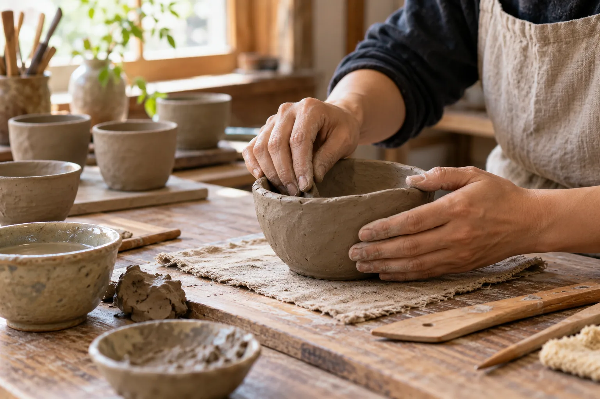

単発の陶芸体験
単発の陶芸体験を案内しています。掲載参考料金は2,500円、粘土500gと焼成代を含みます。税区分や追加粘土、所要時間は公式でご確認ください。

非公式デザイン見本保存された公式掲載情報をもとにした参考案内です。最新の料金・受付状況・実施条件は公式でご確認ください。
GUIDE 01
単発の陶芸体験を案内しています。掲載参考料金は2,500円、粘土500gと焼成代を含みます。税区分や追加粘土、所要時間は公式でご確認ください。
焼成後の受取方法・送料・仕上がり時期は、参加前に希望の体験とあわせてご確認ください。
GUIDE 02
継続コースは1回2時間、1,500円の掲載案内。使用する粘土と焼成は別費用です。単発体験の料金とは異なります。
月通い放題5,000円、6回券8,000円の選択肢も掲載されています。材料・焼成は別途。回数券の利用条件や現在の実施日は公式へご確認ください。
GUIDE 03
長野周辺の出張教室も案内されています。開催場所・人数・希望内容を整理して相談できます。出張費を含む総額と実施可能日は個別にご確認ください。
OFFICIAL INFORMATION
希望する内容の詳しい条件と日程は、公式ページへ。この見本では申込・予約・決済を受け付けていません。